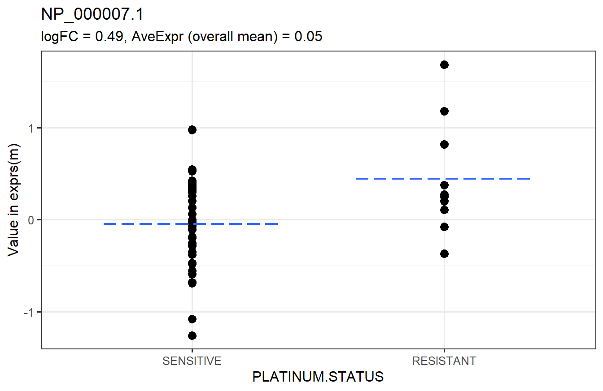
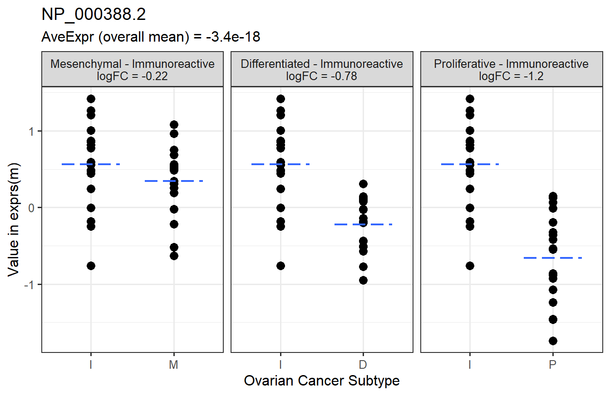

5.2 Two-Sample t-tests
Two-sample t-tests are used to determine whether there is a significant difference between the means of two groups. The null hypothesis is that the group means are equal, and the alternative is that they are not equal. Written another way, the null hypothesis is that the difference in means is zero, and the alternative is that the difference is not zero.
Hypotheses:
\(H_0: \mu_1 = \mu_2 \quad \text{or} \quad \mu_1 - \mu_2 = 0\)
\(H_A: \mu_1 \neq \mu_2 \quad \text{or} \quad \mu_1 - \mu_2 \neq 0\)
MSnSet.utils has two functions that perform two-sample t-tests. The first function, limma_a_b, is used when there are exactly two groups. For example, the PLATINUM.STATUS column of pData(m) has exactly two categories: “SENSITIVE” and “RESISTANT.” The second function, limma_contrasts, is used when there are more than two categories (for example, the SUBTYPE column) and we wish to test specific contrasts (usually when making comparisons against a reference). This results in separate t-statistics and p-values for each contrast, unlike limma_gen, which results in a single F statistic for all contrasts. We will begin with an example of how to use limma_a_b.
5.2.1 One Comparison
# Test RESISTANT - SENSITIVE = 0
t_res1 <- limma_a_b(eset = m, model.str = "~ PLATINUM.STATUS",
coef.str = "PLATINUM.STATUS")
head(arrange(t_res1, adj.P.Val)) # top 6 rows sorted by adjusted p-value## logFC AveExpr t P.Value adj.P.Val B
## NP_000007.1 0.4924636 0.050292811 2.746579 0.008196829 0.9569777 -3.618784
## NP_000013.2 -0.2221522 0.062925069 -1.373152 0.175457942 0.9569777 -4.484676
## NP_000030.1 -0.3525116 -0.051132133 -1.251127 0.216355370 0.9569777 -4.538114
## NP_000031.1 -0.3487920 0.046000375 -1.248196 0.217418216 0.9569777 -4.539343
## NP_000032.1 -0.3564539 0.003432085 -1.445320 0.154225965 0.9569777 -4.451000
## NP_000037.2 -0.2507794 0.041070595 -1.770298 0.087859482 0.9569777 -4.386374The logFC column is the difference in means between the “RESISTANT” and “SENSITIVE” groups (it is always the second level of the factor vs the first level; use levels(m$PLATINUM.STATUS) to check). The other columns are
AveExproverall mean (same asapply(exprs(m), 1, mean, na.rm = TRUE))tmoderated t-statisticP.Valuep-valueadj.P.ValBH-adjusted p-valueBlog-odds of differential expression/abundance
Below is a graphical representation of the results for a specific feature.

We say that features with adjusted p-values less than 0.05 are significantly different between the groups.
# TRUE - significant, FALSE - not significant
table(t_res1$adj.P.Val < 0.05)##
## FALSE
## 8101None of the features are significantly different between the PLATINUM.STATUS groups.
5.2.2 Multiple Comparisons
Now, we will move on to an example of how to use limma_contrasts, which is suited for comparing groups against a reference. We will test the following contrasts. Each level must begin with the variable name, or limma_contrasts will not work. We will treat “Immunoreactive” as the reference group for this example, though this does not really make sense in the context of this data. It would make more sense to do a one-way ANOVA with limma_gen (Section 5.3). This is just for example purposes.
# Contrasts to test
contrasts <- paircomp(x = m$SUBTYPE, name = "SUBTYPE",
ref = "Immunoreactive")
contrasts## [1] "SUBTYPEProliferative-SUBTYPEImmunoreactive"
## [2] "SUBTYPEMesenchymal-SUBTYPEImmunoreactive"
## [3] "SUBTYPEDifferentiated-SUBTYPEImmunoreactive"By default, limma_contrasts generates diagnostic plots. For now, we will not make these plots.
# Test contrasts
t_res2 <- limma_contrasts(eset = m, model.str = "~ 0 + SUBTYPE",
coef.str = "SUBTYPE", contrasts = contrasts,
plot = FALSE)
head(arrange(t_res2, adj.P.Val)) # top 6 rows sorted by adjusted p-value## feature contrast RefSeq logFC
## 1: NP_000388.2 Proliferative-Immunoreactive NP_000388.2 -1.2232098
## 2: NP_112092.1 Proliferative-Immunoreactive NP_112092.1 -1.0268282
## 3: NP_001944.1 Proliferative-Immunoreactive NP_001944.1 -1.3465807
## 4: NP_002323.2 Mesenchymal-Immunoreactive NP_002323.2 0.6707465
## 5: NP_001120963.1 Proliferative-Immunoreactive NP_001120963.1 -0.9267318
## 6: NP_009005.1 Proliferative-Immunoreactive NP_009005.1 -1.0097220
## AveExpr t P.Value adj.P.Val B
## 1: -3.421920e-18 -7.657160 6.044154e-11 1.469273e-06 14.487157
## 2: -9.315227e-18 -6.617129 5.211617e-09 3.415730e-05 10.333050
## 3: -5.322987e-18 -6.599275 5.620519e-09 3.415730e-05 10.262582
## 4: 3.564500e-18 6.680388 3.986565e-09 3.415730e-05 10.482519
## 5: -2.281280e-18 -6.317810 1.837505e-08 7.103991e-05 9.157409
## 6: -1.273715e-17 -6.306092 1.929874e-08 7.103991e-05 9.111651In addition to the columns from the output of limma_a_b, limma_contrasts creates a column for the contrasts and includes all columns from fData. It is important to note that p-values in the adj.P.Val column have been adjusted across all features and contrasts, so testing more contrasts results in fewer significant features. It is best to test only a small number of related contrasts.
Below is a graphical representation of the results for a specific feature.

Finally, we will check the number of significant features in each contrast.
# TRUE - significant, FALSE - not significant
table(t_res2$contrast, t_res2$adj.P.Val < 0.05)##
## FALSE TRUE
## Differentiated-Immunoreactive 8056 47
## Mesenchymal-Immunoreactive 7912 191
## Proliferative-Immunoreactive 7855 248More features are significantly different between the “Proliferative” and “Immunoreactive” groups than “Immunoreactive” compared to the others.